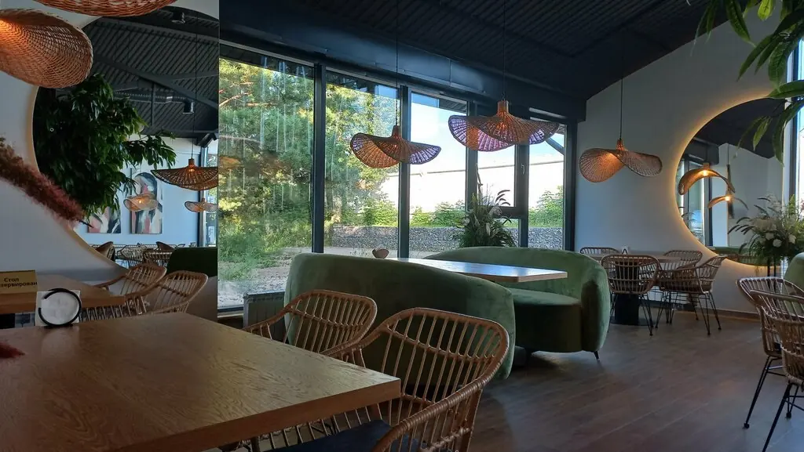
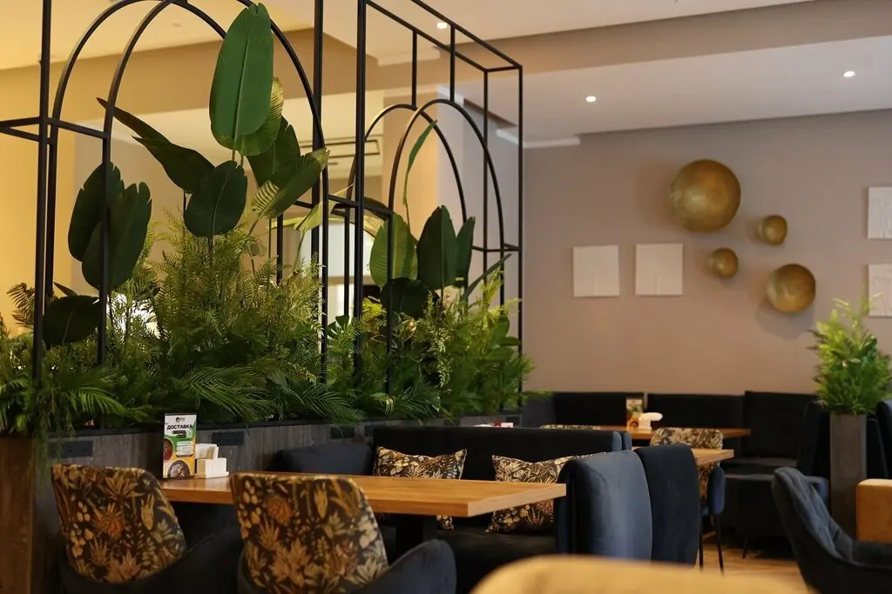
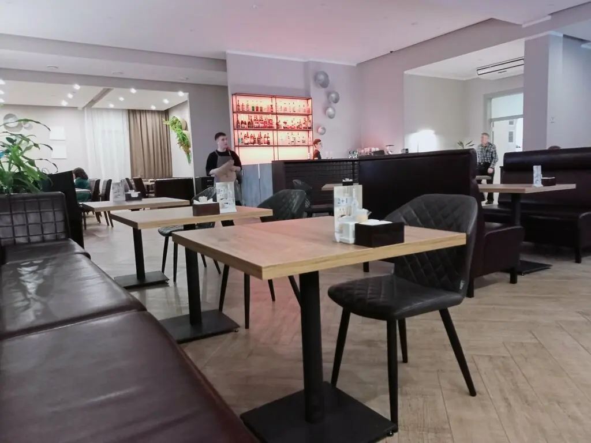

Сосновоборск+7 965 907-00-00
Звезда
Самое яркое место Сосновоборска: обеды по будням, живая музыка, роллы и большие праздники. Зал на 140 гостей.
4,6 · 518 оценок
Созвездие меню
Тартар из сёмги на ржаных гренках549 ₽
Тартар из говядины639 ₽
Тигровые креветки в соусе терияки689 ₽
Груша, запечённая с дорблю389 ₽
Ролл Лава с лососем549 ₽
Пивной сет для друзей989 ₽
Часть меню с Яндекс Карт и 2ГИС, цены уточняйте у официанта.
Под этим небом



Звёзды отзывов
Отличное место, куда можно приходить хоть каждый день! По будням здесь предлагают классные бизнес-ланчи.Roman Belomestnov
Очень уютное место с приятной атмосферой и красивым интерьером. Просторный зал, большие окна и комфортная веранда.Маня Вернер
Хожу сюда на обеды давно, меню не приедается.Валерия Куракина